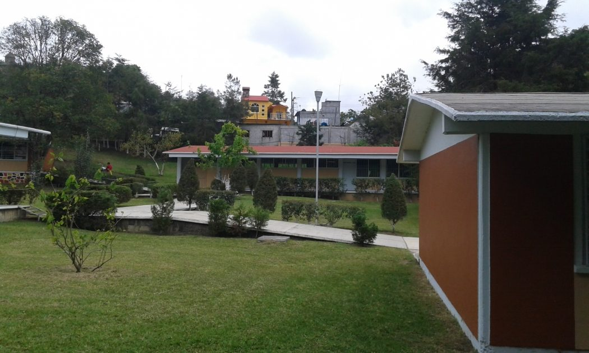
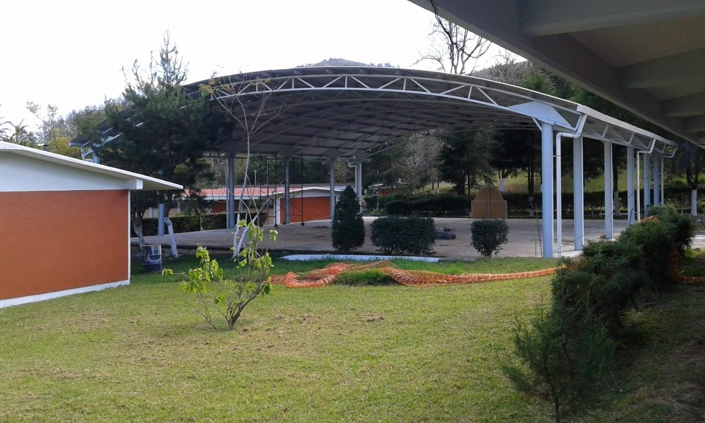
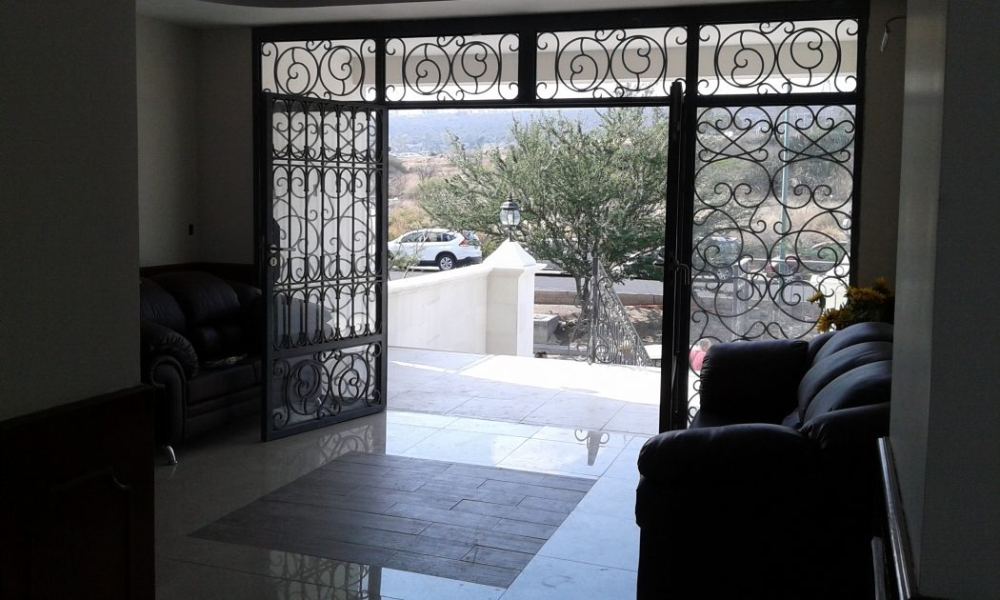
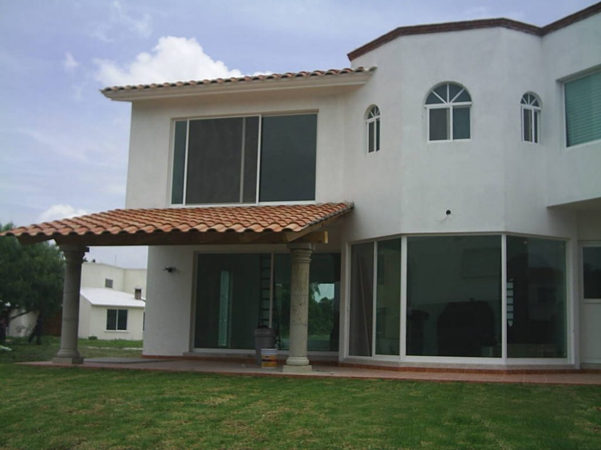
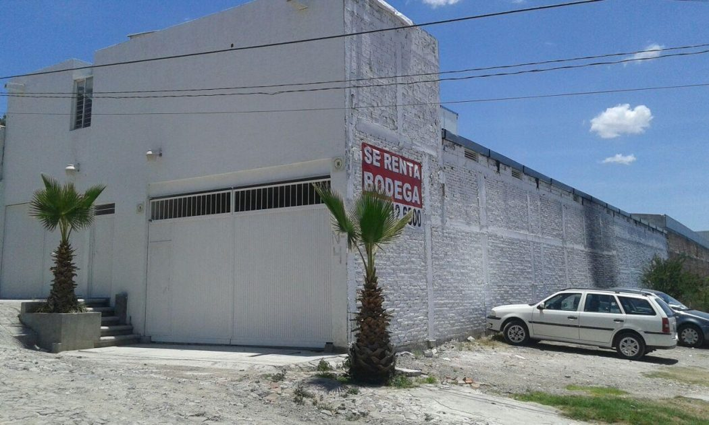

Portafolio
Trabajos
Proyectos y obras del estudio en Querétaro. Educación, vivienda, industria y espacios de trabajo.


2 fotos
01
Escuela Aguazarca
Landa de Matamoros, Qro.


2 fotos
02
Arco techo
Landa de Matamoros, Qro.


1 foto
03
Edificio Centro Sur
Querétaro, Qro.


1 foto
04
Residencia Balvanera
Corregidora, Qro.


3 fotos
05
Bodega Miranda
Querétaro, Qro.
No hay trabajos en esta categoría por ahora.
¿Tienes un proyecto en mente?
Cuéntanos qué necesitas construir, ampliar o regularizar.